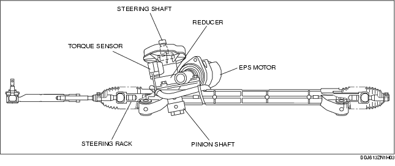

• The steering gear and linkage consists of the steering shaft, pinion shaft, EPS motor, deceleration system, steering rack, and torque sensor.
• The operating force generated by the EPS motor is transmitted to the steering rack via the deceleration system as the pinion torque.
